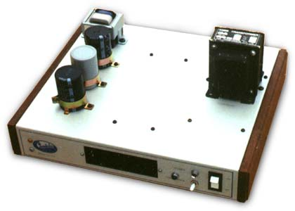

|
 All of my tube modules run off a this power supply, which is based on Eric's design. Unlike the title suggests, there are no tubes in the power supply itself. It was put together using junk that was to hand. The negative 150V side of the psu is almost identical to the circuit diagram, save for reversing of all polarised components. The positive side of the psu is a lot heavier in design, using a 240V to 115V stepdown mains isolating transformer, designed for running US equipment on Australian mains.
In the center of the unit, when viewed from below, you can see a switchmode PSU. This is a 5 volt psu that has been cranked up to about 5.5 volts, for driving the filaments of the various tubes. There is also a switch on the front panel that connects a pair of 1k5 5W resistors across the capacitors to rapidly discharge them, and the decoupling capacitors throughout the modules. This was done to enable me to continue working on the modules during prototyping as quicly as possible, instead of having to wait for the usual 15 minutes or so it takes a 470k discharge resistor to discharge the capacitors. No discharge resistors are shown on the diagrams, but it is a good idea to add them. In practice, this supply pumps out around 170V to 180V on the positive side, which is a fraction high, for economic reasons - I can't use 160V capacitors to decouple the modules, instead having to use 200V ones.
Article, art & design copyright 2001 by Ken Stone
|